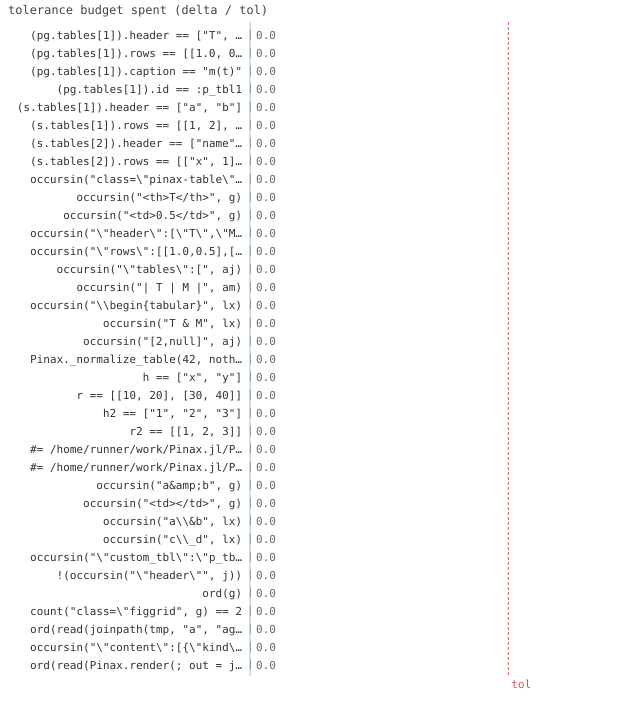

36/36 passed · 2.15s
| id | label | got | want | Δ vs tol (kind) | |
|---|---|---|---|---|---|
| ✓ | t651 | (pg.tables[1]).header == ["T", "M"] @ test_table.jl:24 code | 1.0 | 1.0 | 0.0 vs 0.5 (abs) |
| ✓ | t652 | (pg.tables[1]).rows == [[1.0, 0.5], [2.0, 0.6]] @ test_table.jl:25 code | 1.0 | 1.0 | 0.0 vs 0.5 (abs) |
| ✓ | t653 | (pg.tables[1]).caption == "m(t)" @ test_table.jl:26 code | 1.0 | 1.0 | 0.0 vs 0.5 (abs) |
| ✓ | t654 | (pg.tables[1]).id == :p_tbl1 @ test_table.jl:27 code | 1.0 | 1.0 | 0.0 vs 0.5 (abs) |
| ✓ | t655 | (s.tables[1]).header == ["a", "b"] @ test_table.jl:29 code | 1.0 | 1.0 | 0.0 vs 0.5 (abs) |
| ✓ | t656 | (s.tables[1]).rows == [[1, 2], [3, 4]] @ test_table.jl:30 code | 1.0 | 1.0 | 0.0 vs 0.5 (abs) |
| ✓ | t657 | (s.tables[2]).header == ["name", "v"] @ test_table.jl:31 code | 1.0 | 1.0 | 0.0 vs 0.5 (abs) |
| ✓ | t658 | (s.tables[2]).rows == [["x", 1], ["y", 2]] @ test_table.jl:32 code | 1.0 | 1.0 | 0.0 vs 0.5 (abs) |
| ✓ | t659 | occursin("class=\"pinax-table\"", g) @ test_table.jl:45 code | 1.0 | 1.0 | 0.0 vs 0.5 (abs) |
| ✓ | t660 | occursin("<th>T</th>", g) @ test_table.jl:46 code | 1.0 | 1.0 | 0.0 vs 0.5 (abs) |
| ✓ | t661 | occursin("<td>0.5</td>", g) @ test_table.jl:47 code | 1.0 | 1.0 | 0.0 vs 0.5 (abs) |
| ✓ | t662 | occursin("\"header\":[\"T\",\"M\"]", aj) @ test_table.jl:51 code | 1.0 | 1.0 | 0.0 vs 0.5 (abs) |
| ✓ | t663 | occursin("\"rows\":[[1.0,0.5],[2.0,0.6]]", aj) @ test_table.jl:52 code | 1.0 | 1.0 | 0.0 vs 0.5 (abs) |
| ✓ | t664 | occursin("\"tables\":[", aj) @ test_table.jl:53 code | 1.0 | 1.0 | 0.0 vs 0.5 (abs) |
| ✓ | t665 | occursin("| T | M |", am) @ test_table.jl:55 code | 1.0 | 1.0 | 0.0 vs 0.5 (abs) |
| ✓ | t666 | occursin("\\begin{tabular}", lx) @ test_table.jl:58 code | 1.0 | 1.0 | 0.0 vs 0.5 (abs) |
| ✓ | t667 | occursin("T & M", lx) @ test_table.jl:59 code | 1.0 | 1.0 | 0.0 vs 0.5 (abs) |
| ✓ | t668 | occursin("[2,null]", aj) @ test_table.jl:70 code | 1.0 | 1.0 | 0.0 vs 0.5 (abs) |
| ✓ | t669 | Pinax._normalize_table(42, nothing) @ test_table.jl:74 code | 1.0 | 1.0 | 0.0 vs 0.5 (abs) |
| ✓ | t670 | h == ["x", "y"] @ test_table.jl:79 code | 1.0 | 1.0 | 0.0 vs 0.5 (abs) |
| ✓ | t671 | r == [[10, 20], [30, 40]] @ test_table.jl:80 code | 1.0 | 1.0 | 0.0 vs 0.5 (abs) |
| ✓ | t672 | h2 == ["1", "2", "3"] @ test_table.jl:82 code | 1.0 | 1.0 | 0.0 vs 0.5 (abs) |
| ✓ | t673 | r2 == [[1, 2, 3]] @ test_table.jl:83 code | 1.0 | 1.0 | 0.0 vs 0.5 (abs) |
| ✓ | t674 | #= /home/runner/work/Pinax.jl/Pinax.jl/test/test_table.jl:88 =# @page :p "P" begin #= /home/runner/… @ test_table.jl:88 code | 1.0 | 1.0 | 0.0 vs 0.5 (abs) |
| ✓ | t675 | #= /home/runner/work/Pinax.jl/Pinax.jl/test/test_table.jl:92 =# @page :q "Q" begin #= /home/runner/… @ test_table.jl:92 code | 1.0 | 1.0 | 0.0 vs 0.5 (abs) |
| ✓ | t676 | occursin("a&b", g) @ test_table.jl:104 code | 1.0 | 1.0 | 0.0 vs 0.5 (abs) |
| ✓ | t677 | occursin("<td></td>", g) @ test_table.jl:105 code | 1.0 | 1.0 | 0.0 vs 0.5 (abs) |
| ✓ | t678 | occursin("a\\&b", lx) @ test_table.jl:107 code | 1.0 | 1.0 | 0.0 vs 0.5 (abs) |
| ✓ | t679 | occursin("c\\_d", lx) @ test_table.jl:108 code | 1.0 | 1.0 | 0.0 vs 0.5 (abs) |
| ✓ | t680 | occursin("\"custom_tbl\":\"p_tbl1\"", j) @ test_table.jl:119 code | 1.0 | 1.0 | 0.0 vs 0.5 (abs) |
| ✓ | t681 | !(occursin("\"header\"", j)) @ test_table.jl:120 code | 1.0 | 1.0 | 0.0 vs 0.5 (abs) |
| ✓ | t682 | ord(g) @ test_table.jl:141 code | 1.0 | 1.0 | 0.0 vs 0.5 (abs) |
| ✓ | t683 | count("class=\"figgrid", g) == 2 @ test_table.jl:142 code | 1.0 | 1.0 | 0.0 vs 0.5 (abs) |
| ✓ | t684 | ord(read(joinpath(tmp, "a", "agent.md"), String)) @ test_table.jl:145 code | 1.0 | 1.0 | 0.0 vs 0.5 (abs) |
| ✓ | t685 | occursin("\"content\":[{\"kind\":\"figure\",\"id\":\"p_fig1\"},{\"kind\":\"table\",\"id\":\"p_tbl1\"},{\"ki… @ test_table.jl:147 code | 1.0 | 1.0 | 0.0 vs 0.5 (abs) |
| ✓ | t686 | ord(read(Pinax.render(; out = joinpath(tmp, "l"), theme = :latex), String)) @ test_table.jl:152 code | 1.0 | 1.0 | 0.0 vs 0.5 (abs) |

⤓ downloadPinax.reset!(; title="t")
pg = Pinax.current_document().pages[1]
@test pg.tables[1].header == ["T", "M"]@test pg.tables[1].rows == [[1.0, 0.5], [2.0, 0.6]] # columnar -> row-major@test pg.tables[1].caption == "m(t)"@test pg.tables[1].id == :p_tbl1s = pg.sections[1]
@test s.tables[1].header == ["a", "b"] # matrix + explicit header@test s.tables[1].rows == [[1, 2], [3, 4]]@test s.tables[2].header == ["name", "v"] # row records -> header from fields@test s.tables[2].rows == [["x", 1], ["y", 2]]tmp = mktempdir()
Pinax.reset!(; title="T")
g = read(Pinax.render(; out=joinpath(tmp, "g"), theme=:gallery), String)
@test occursin("class=\"pinax-table\"", g)@test occursin("<th>T</th>", g)@test occursin("<td>0.5</td>", g)Pinax.render(; out=joinpath(tmp, "a"), theme=:agent)
aj = read(joinpath(tmp, "a", "agent.json"), String)
@test occursin("\"header\":[\"T\",\"M\"]", aj)@test occursin("\"rows\":[[1.0,0.5],[2.0,0.6]]", aj) # native numbers, not strings@test occursin("\"tables\":[", aj) # section/page tables arrayam = read(joinpath(tmp, "a", "agent.md"), String)
@test occursin("| T | M |", am) # markdown tablelx = read(Pinax.render(; out=joinpath(tmp, "l"), theme=:latex), String)
@test occursin("\\begin{tabular}", lx)@test occursin("T & M", lx)tmp = mktempdir()
Pinax.reset!(; title="t")
Pinax.render(; out=joinpath(tmp, "a"), theme=:agent)
aj = read(joinpath(tmp, "a", "agent.json"), String)
@test occursin("[2,null]", aj)@test_throws ErrorException Pinax._normalize_table(42, nothing)h, r = Pinax._normalize_table([[10, 20], [30, 40]], ["x", "y"])
@test h == ["x", "y"]@test r == [[10, 20], [30, 40]]h2, r2 = Pinax._normalize_table([(1, 2, 3)], nothing)
@test h2 == ["1", "2", "3"] # auto-numbered header@test r2 == [[1, 2, 3]]Pinax.reset!()
@test_throws ErrorException (@page :p "P" begin
@table [1 2 3; 4 5 6] header = ["a", "b"] # 3 columns, 2 headers
end)Pinax.reset!()
@test_throws ErrorException (@page :q "Q" begin
@table [(1, 2), (3, 4, 5)] # ragged rows
end)tmp = mktempdir()
Pinax.reset!(; title="t")
g = read(Pinax.render(; out=joinpath(tmp, "g"), theme=:gallery), String)
@test occursin("a&b", g) # & HTML-escaped@test occursin("<td></td>", g) # missing -> blank celllx = read(Pinax.render(; out=joinpath(tmp, "l"), theme=:latex), String)
@test occursin("a\\&b", lx) # & LaTeX-escaped@test occursin("c\\_d", lx) # _ LaTeX-escapedtmp = mktempdir()
Pinax.reset!(; title="x")
Pinax.render(; out=joinpath(tmp, "a"), theme=TableOverrideAgent())
j = read(joinpath(tmp, "a", "agent.json"), String)
@test occursin("\"custom_tbl\":\"p_tbl1\"", j) # override fired via _agent_tables! dispatch@test !occursin("\"header\"", j) # default emit_table did NOT runtmp = mktempdir()
svg = joinpath(tmp, "o.svg")
write(svg, "<svg xmlns='http://www.w3.org/2000/svg'><rect/></svg>")
Pinax.reset!(; title="T")
ord(s) =
first(findfirst("FIGONE", s)) <
first(findfirst("TBLONE", s)) <
first(findfirst("FIGTWO", s))
g = read(Pinax.render(; out=joinpath(tmp, "g"), theme=:gallery), String)
@test ord(g) # gallery preserves order@test count("class=\"figgrid", g) == 2 # fig1 grid | table | fig2 grid (table flushes the grid)Pinax.render(; out=joinpath(tmp, "a"), theme=:agent)
@test ord(read(joinpath(tmp, "a", "agent.md"), String)) # agent.md is linear, in orderaj = read(joinpath(tmp, "a", "agent.json"), String)
@test occursin(
"\"content\":[{\"kind\":\"figure\",\"id\":\"p_fig1\"},{\"kind\":\"table\",\"id\":\"p_tbl1\"},{\"kind\":\"figure\",\"id\":\"p_fig2\"}]",
aj,
) # the order index in agent.json@test ord(read(Pinax.render(; out=joinpath(tmp, "l"), theme=:latex), String)) # latex order{kind=link}